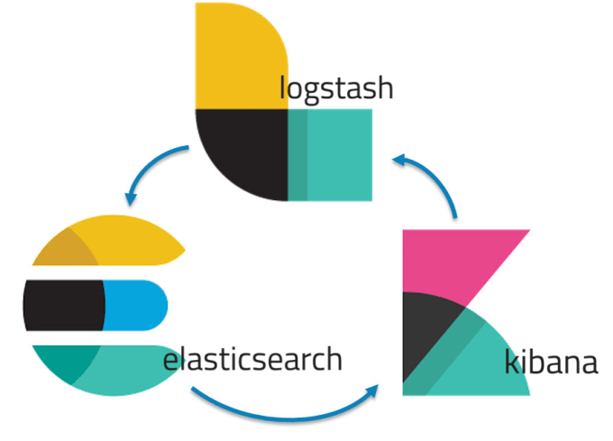

No Microservices?
Docker
is still your best friend
About me
- 4+ years in EPAM
- Lead Software Engineer
- Fullstack Web Developer
- .NET C#/F# and JavaScript/TypeScript
- Currently TeamLead on JETC-DEV project
- Love GitHub
- https://github.com/DarkXaHTeP
- Develop and contribute to Open Source
- One of projects has 60 000+ downloads
- Try to keep up with trends
- Don't like serious presentations
How I learned Docker
- First impressions in late 2015
- Usage on project since November 2016
You could do the same!

Agenda
- What's Docker?
- Containers
- Dockerfile
- Demo
- Build and run a container
- Docker Ecosystem
- Why do we need it?
- What about Windows?
Agenda
- Local Environment
- docker-compose.yml
- Continuous Integration
- Demo
- docker-compose
- CI on JETC-DEV
Agenda
- Pet Projects
- Source Control + CI
- Hosting
- Free Domain and HTTPS
- ELK stack
- Demo
- Why and what to try next
Docker is a set of tools designed to make it easier to create, deploy, and run applications by using containers
- Containers existed before Docker (LCX)
- Docker CLI, Docker Compose, Docker Hub, Docker Swarm
Containers
How it works?
- Containers rely on Linux kernel features
- Thank you, Linus Torvalds

What features?
- Process isolation (namespaces)
- Resource limitation (cgroups)
- Virtual Networking
- Layered copy-on-write filesystem
Dockerfile
FROM node:10.15.3-stretch
WORKDIR /app
COPY package*.json ./
RUN npm install
COPY . .
EXPOSE 8080
CMD [ "npm", "start" ].NET Core Dockerfile
# build backend
FROM mcr.microsoft.com/dotnet/core/sdk:2.2.105-alpine3.9 AS build-env
WORKDIR /app
COPY . ./
RUN dotnet publish App.csproj -c Release -r linux-musl-x64 -o out
# build runtime image
FROM mcr.microsoft.com/dotnet/core/runtime-deps:2.2.3-alpine3.9
WORKDIR /app
COPY --from=build-env /app/out ./
ENV ASPNETCORE_URLS http://0.0.0.0:5000
EXPOSE 5000
ENTRYPOINT ["./SampleApp.Web"]DEMO
Why?
- Ease of use because of abstraction
- Isolation
- Infrastructure as a code
- Same local, QA and PROD envs
What about Windows?
Actually, it's not that bad, but...
- Windows Server 2016 and Windows 10
- Windows Nano and Core base images
- Run only on Windows
- Huge images
- 4+ GB of memory used
- Long start time
- Breaking changes and incompatibility between releases
Let's imagine that you've got a project with
- SQL Server
- Apache Kafka
- Zookeeper
- Kafka Lenses (UI for Kafka)
- Hashicorp Consul
- Hashicorp Vault
- Hashicorp Vault UI
- Redis
- 10+ developers
One docker-compose.yml to rule them all
docker-compose updocker-compose.yml
version: '2'
services:
sqlserver:
image: mcr.microsoft.com/mssql/server:2017-CU13-ubuntu
container_name: docker-itshare-sqlserver
ports:
- 1433:1433
environment:
ACCEPT_EULA: Y
SA_PASSWORD: Qwerty123
MSSQL_PID: Developer
volumes:
- sqldata:/var/opt/mssql
redis:
image: redis:5.0.4-alpine3.9
container_name: docker-itshare-redis
ports:
- 6379:6379
volumes:
sqldata:Continuous Integration
- Dependencies
- Versions
- DevOps responsibilities?
docker run -i --rm -v ./TestProject.UI:/data \
node:10.15.3-alpine \
sh -c "cd /data && npm install && npm run lint && ./node_modules/.bin/ng build --prod --no-progress --delete-output-path false"docker run -i --rm -v ./TestProject.UI:/data
mcr.microsoft.com/dotnet/core/sdk:2.2.105-alpine3.9
sh -c "cd /data && dotnet restore && dotnet publish -c Release --self-contained -r win10-x64 -o out"DEMO
Want to have cool pet projects?
Source Control and CI

.travis.yml
language: node_js
node_js:
- 10.15.3
before_install:
- chmod 755 ./deploy.sh
install: npm install
script: npm run pug:compile
deploy:
provider: script
script: ./deploy.sh
skip_cleanup: true.travis.yml with Docker
language: bash
services:
- docker
script:
- docker build -t darkxahtep/sampleapp:$TRAVIS_BUILD_NUMBER .
after_success:
- if [ "$TRAVIS_BRANCH" == "master" ]; then
docker login -u="$DOCKER_USERNAME" -p="$DOCKER_PASSWORD";
docker push darkxahtep/docker-itshare-sampleapp;
fiHosting

Main Problem
There is a 50$ Limit per month
Single VM to run it all
- Cheapest region (e.g. EastUS2)
- B2s tier with SSD (2 vCPU, 4GB RAM)
- Core OS Linux (Docker preinstalled)
- ~41$ per month
Time to deploy containers to cloud
Free Domain and HTTPS
- *.pp.ua through https://nic.ua
- *.tk and *.ml through https://dot.tk
- Let's Encrypt https://letsencrypt.org/
What else?

Demo
Things to try next
- Notifications to Telegram using ElastAlert
- Kubernetes
- Splunk instead of ELK
- 2-3 smaller VMs and load balancing
- Raspberry PI cluster
Questions?